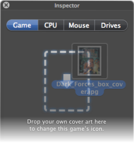

Nostalgia doesn’t have to stop at playing your games. Why not make your collection into a shrine to your misspent youth?
Boxer can turn game cover scans (or any image you like) into high-resolution Finder icons for your games.
Import the game and drop your image
onto the game icon once it’s finished.
Launch the game, open the Inspector’s Game tab, and drop your image onto the dropzone.
Et voilà! Soon you’ll have a shelf full of gorgeous games.
If you drop an opaque image (like a JPG), then Boxer will apply a shiny box effect to the icon.
If you drop an image with transparency data (like a 32-bit PNG), then Boxer will use the image as-is.
The Help menu shows documentation files inside the gamebox you’re playing. Click a file to open it in the appropriate viewer.
Normally this list shows all text files, PDFs and images inside the gamebox. To customise it:
Documentation,
When there’s a Documentation folder inside the gamebox, the Help list will show everything in that folder and nothing else.
ReplacementDocs has good-quality PDF scans of game manuals, maps and other documentation.
Boxer has a Help menu item to search for the current game on ReplacementDocs.